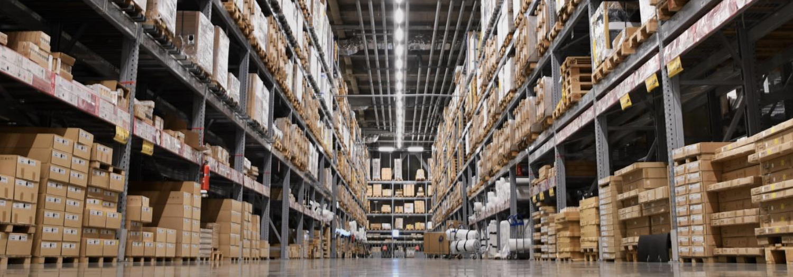

Lights out warehousing
The idea of ‘lights out’ warehousing is not new yet currently isn't being actively pursued by most warehousing companies as an end goal; most companies are seeking more and more automation for tasks such as stocking and shipping. With the growth and commoditization of robotics, scanners, digital twinning, and other technologies the end game will eventually be warehouses with a limited need for human labor and no “unskilled” labor.
Credit: Arizona DoEQ